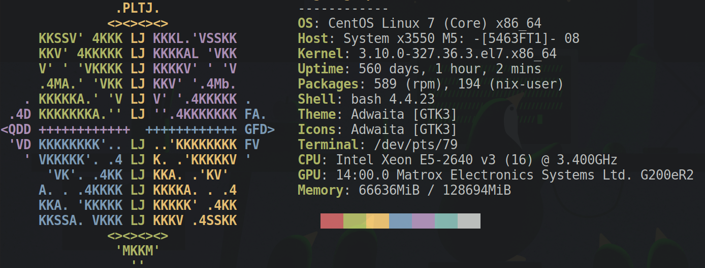

Created: 2021-04-13 Tue 23:17
Woes
docker
singularityprootlmod

Necessary Evil
However
Does no one use it then?
nix supportnixConcept
nix to build
nix re-install itself
Who worked on it first?
2.0.4 apparentlyruby involves:watch -n1 -x chmod 777 -R /tmp/nix-build-ruby-2.6.6.drv-0/source/lib/
nix-build
# something about a .nfs lockfile in some .nix/$HASH-pkg/.nfs0234234
mv .nix/$HASH-pkg/ .diePKGs/
nix-build # profit
Builder Provenance
Queue Integration
slurm or PBS to run on the whole clustercatern